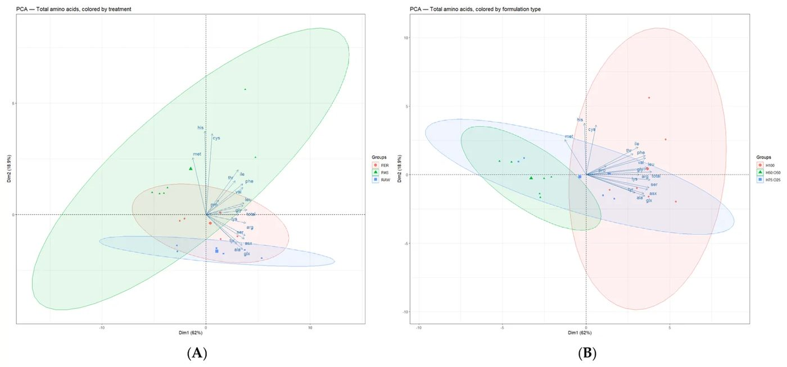
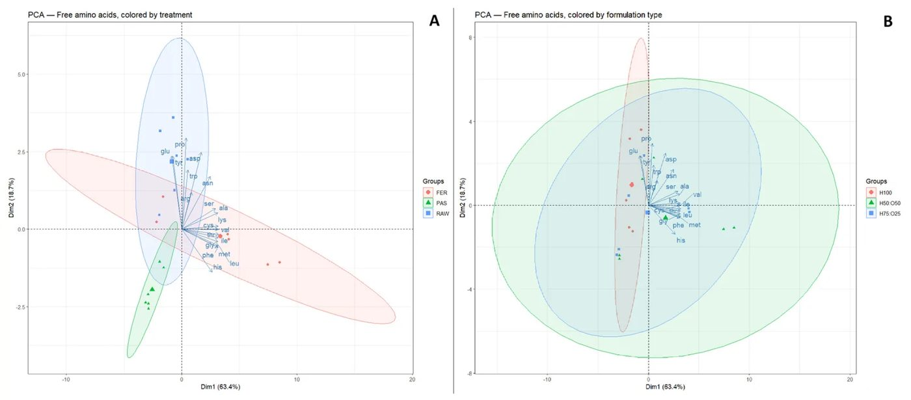
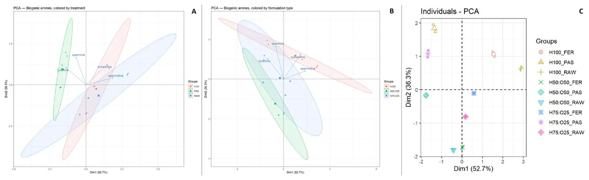
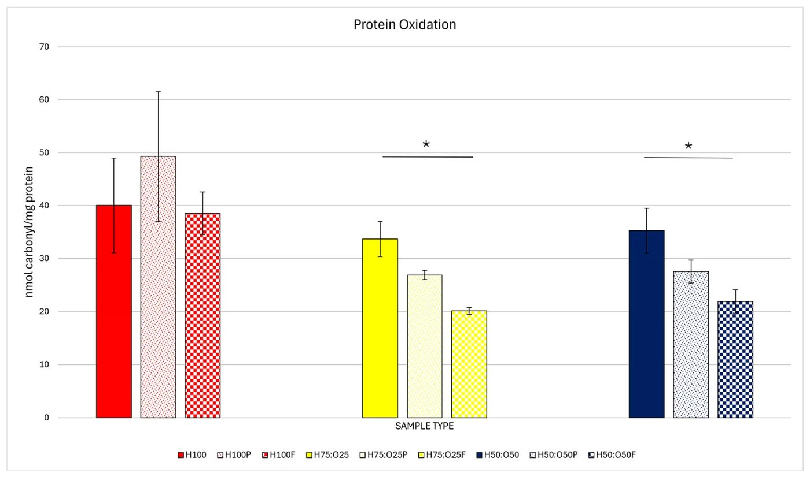
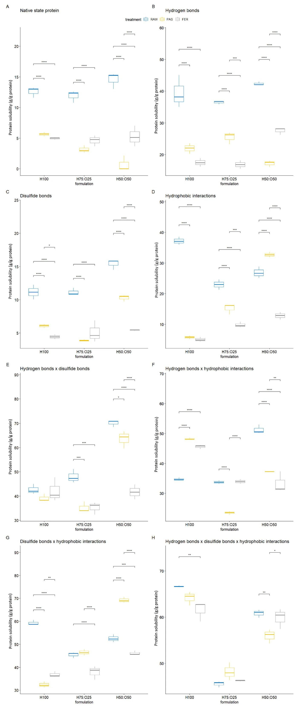
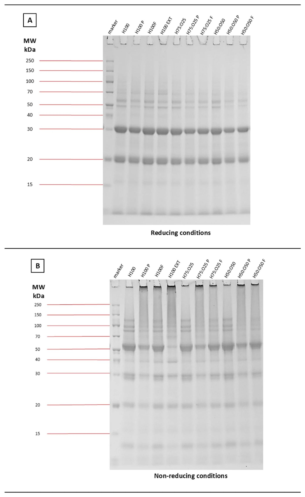
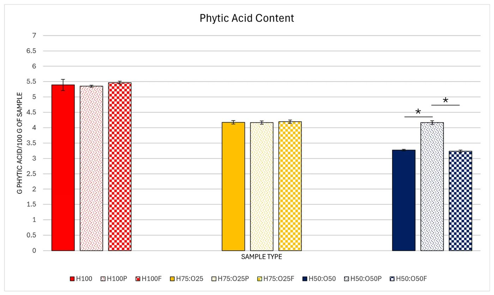

Конопля и овес: как ферментация меняет структуру растительного белка


Полное описание рисунка
Анализ главных компонент общего содержания аминокислот. Биплоты компоненты 1 (PC1, 59,9%) и компоненты 2 (PC2, 20,0%), иллюстрирующие взаимосвязи между измеренными переменными. (A) Биплот с образцами, сгруппированными по методу обработки. (B) Биплот с образцами, сгруппированными по составу.
Исследователи изучили, как сочетание конопляного и овсяного жмыха влияет на свойства будущих продуктов. Выяснилось, что ферментация молочнокислыми бактериями помогает частично восстановить растворимость белка, нарушенную при термической обработке. Оптимальным балансом для текстуры и питательности стало соотношение 75% конопли к 25% овса.
Главное
- Ферментация при pH 5,2 частично восстанавливает растворимость белка после пастеризации.
- Соотношение 75:25 конопляного и овсяного жмыха — оптимальный баланс питательности.
- Овсяный жмых служит источником углеводов, необходимых для метаболизма молочнокислых бактерий.
Подробнее
В основе исследования лежит использование побочных продуктов масложировой промышленности — жмыха. Конопляный жмых богат белком (20–40%), но беден углеводами, необходимыми для питания бактерий, поэтому в состав добавили овсяный жмых. Образцы пастеризовали при 80 °C в течение 10 минут, а затем ферментировали стартовой культурой Streptococcus thermophilus и Lactobacillus delbrueckii (100 DCU/кг) при 40 °C до достижения pH 5,2.
Анализ показал, что пастеризация вызывает агрегацию белков, что подтверждается данными SDS-PAGE (электрофорез в полиакриламидном геле). Ферментация, напротив, способствует частичному восстановлению растворимости белка за счет изменения pH и структурных перестроек. Соотношение 75:25 (конопля:овес) показало лучшие результаты по функциональным свойствам, сохранив при этом высокое содержание белка и улучшив профиль аминокислот по сравнению с чистым конопляным жмыхом.
Ограничения
Исследование проводилось на единственной партии каждого образца, что ограничивает статистическую достоверность результатов.
Полный перевод статьи
Резюме
Растущее распространение веганских, вегетарианских и флекситарианских диет обусловлено различными факторами, такими как этика обращения с животными, экологические проблемы, питание и риски для здоровья. Хотя многие люди по-прежнему ценят мясо за его сенсорные свойства или культурное значение в местной кухне, растительное сырье все чаще используется для производства аналогов мяса. Кроме того, в индустрии растительных продуктов наблюдается тенденция сочетать новые методы структурирования, такие как 3D-печать и мокрое формование, с известными биохимическими методами обработки, например ферментацией, для создания питательных и устойчивых вариантов, привлекательных для потребителей. Жмыхи, побочные продукты маслоэкстракционной промышленности, становятся ценным сырьем для производства продуктов питания благодаря высокому содержанию белка и биологически активных соединений. Конопляный жмых (HPC), получаемый при холодном отжиме семян конопли для получения масла, представляет особый интерес среди жмыхов масличных культур из-за относительно высокого содержания белка (20–40%), высокого уровня незаменимых аминокислот и аргинина, а также расширяющейся индустрии конопляного масла в Литве, которая генерирует значительные объемы этого побочного продукта с ограниченным использованием в пищевых целях. Несмотря на потенциал, жмыхи часто недоиспользуются, многие из них выбрасываются или ограничиваются низкоценными применениями, такими как корм для животных. Небелковая фракция жмыхов, включающая пищевые волокна, минералы и биологически активные соединения, остается в значительной степени неиспользованной в промышленных процессах, направленных на производство белковых концентратов и изолятов. Дополнительные этапы обработки, такие как осаждение, фильтрация и концентрирование, также потребляют значительные энергетические и водные ресурсы, вызывая опасения по поводу устойчивости. Более того, растворимость растительного белка остается сложным ограничением для большинства традиционных методов экстракции. Переход к минимальной обработке и прямому включению жмыхов в рецептуры продуктов питания может сократить отходы и энергопотребление, повышая общую устойчивость растительных продовольственных систем.
Важно
Конопляный жмых содержит 20–40% белка и богат аргинином, однако его потенциал в пищевой промышленности ограничен из-за неполного использования небелковых компонентов и высоких затрат на экстракцию.
Использование жмыхов в качестве источников белка не лишено проблем. Растительные белки обычно считаются менее качественными, чем животные, из-за ограничений в профилях незаменимых аминокислот и сниженной усвояемости. Кроме того, растительные матрицы содержат антипитательные факторы, такие как фитиновая кислота, танины, сапонины и лектины, которые препятствуют усвоению питательных веществ и перевариванию белка, ингибируя пищеварительные ферменты. Ферментация является перспективной стратегией для улучшения питательных и функциональных свойств жмыхов. Ферментация может повысить усвояемость белка за счет частичной денатурации запасных белков, увеличения растворимости белка и улучшения доступности аминокислот. Кроме того, было показано, что ферментация значительно снижает содержание антипитательных факторов, таких как фитиновая кислота, в зерновых и псевдозерновых культурах, и может оказывать аналогичное воздействие на жмыхи. Помимо улучшения питательной ценности, ферментация может также улучшить технофункциональные свойства жмыхов, такие как влагоудерживающая способность (ВУС), эмульгирующие и гелеобразующие свойства, которые критически важны для их применения в рецептурах пищевых продуктов. Хотя потенциал ферментации некоторых отдельных видов жмыхов был изучен, влияние ферментации на комбинированные матрицы жмыхов остается в значительной степени неисследованным.
Конопляный жмых был выбран в качестве основной матрицы в данном исследовании из-за высокого содержания белка и клетчатки. Однако низкое содержание углеводов (~3,7 г/100 г) ограничивает доступность ферментируемого субстрата для молочнокислых бактерий, которые используют водорастворимые углеводы в качестве основного источника углерода. Овсяный жмых был включен в качестве функционального модификатора для решения этого ограничения: остаточное содержание крахмала может служить дополнительным источником ферментируемых углеводов, одновременно способствуя модуляции расширения и текстуры на дальнейших этапах обработки (например, экструзия при высокой влажности). Сочетание этих двух видов жмыха было направлено на использование их композиционной взаимодополняемости, поскольку смешивание растительных ингредиентов с различными питательными и функциональными профилями было предложено в качестве стратегии для взаимной компенсации индивидуальных ограничений. Ферментация этой комбинированной матрицы может дополнительно изменить ее питательную ценность и технофункциональные свойства, поддерживая ее потенциальное применение в разработке растительных продуктов питания. Данное исследование направлено на изучение влияния молочнокислой ферментации на структуру белка, питательные характеристики и технофункциональные параметры комбинированных матриц жмыхов. В частности, в исследовании оцениваются изменения в профилях окисления, деградации и связей белка, профилях аминокислот и биогенных аминов, а также содержание фитиновой кислоты. Кроме того, исследуются ВУС, маслоудерживающая способность (МУС) и размер частиц с целью разработки устойчивых и питательных растительных рецептур. Мы предполагаем, что молочнокислая ферментация комбинированных матриц конопляного и овсяного жмыха будет модулировать их структуру белка, питательные характеристики и технофункциональные свойства в зависимости от рецептуры, с ожидаемым снижением содержания антипитательных факторов и окисления белка, а также улучшением растворимости белка, ВУС и МУС по сравнению с необработанными материалами.
Осторожно
Исследование является предварительным: использовалась только одна репрезентативная партия для каждой комбинации рецептуры и обработки из-за ограничений ресурсов, что требует подтверждения в будущих работах с независимыми повторностями.
Органические гранулы конопляного жмыха (HPC) были получены от Allive Europe UAB, Вошконяй, Литва. Материал был получен из семян конопли холодного отжима (максимальная температура на выходе 40 °C) и впоследствии спрессован в гранулы. Химическая обработка не применялась. В лаборатории KTU Food Institute гранулы измельчались в два этапа для обеспечения однородности размера частиц. Грубое измельчение проводилось с помощью ручной мясорубки, а более мелкое — с помощью универсальной мельницы для сухих продуктов (MLVS-M100, Мажейкяй, Литва). Измельченный материал просеивали через сито из нержавеющей стали с размером ячеек 500 мкм (Glenammer, Шотландия, Великобритания) и разделяли на две фракции: с размером частиц >500 мкм и <500 мкм; для всех дальнейших экспериментов использовали фракцию с меньшим размером частиц. Овсяный жмых (OPC) производился на месте из коммерческого овса (Pranciškaus malūnas, Каунас, Литва). Овсяные хлопья смешивали с дистиллированной водой в течение 20 с и отжимали через марлю. Овсяный жмых сушили в печи при 45 °C в течение 12 ч, механически измельчали в кофемолке и просеивали (размер ячеек 500 мкм).
Пояснение
Размер частиц <500 мкм был выбран для обеспечения стандартизации сырья, что критически важно для воспроизводимости процессов ферментации и последующих анализов.
Для экспериментов по ферментации были подготовлены две рецептуры комбинированных матриц растительного жмыха, состоящие из HPC и OPC, с соотношением смешивания HPC:OPC 75:25 (H75:O25) и 50:50 (H50:O50). Эти соотношения были выбраны для представления градиента включения OPC: соотношение 75:25 сохраняет HPC как доминирующую фракцию, сохраняя его белковый вклад при введении умеренного количества OPC для модуляции доступности субстрата для ферментации и функциональных свойств, тогда как соотношение 50:50 представляет верхний уровень включения до того, как содержание белка будет скомпрометировано более низким содержанием белка в OPC. Третья рецептура чистого HPC (H100) также была включена в качестве базового контроля.
Для сырых образцов (RAW) 500 г каждой рецептуры жмыха (H100, H75:O25 и H50:O50) оставляли без обработки, переносили в пластиковые пакеты, вакуумировали и хранили при 4 °C до анализа. Для пастеризованных образцов (PAS) 500 г каждой рецептуры жмыха смешивали с 1450 мл дистиллированной воды в стеклянной банке объемом 2 л. Смеси пастеризовали следующим образом: нагрев до 80 °C проводили на водяной бане на индукционной плите. Температуру поддерживали в течение 10 мин, контролируя термометром. Смесь перемешивали каждую минуту стерильным металлическим столовым ножом. Через 10 мин смесь немедленно охлаждали до 40 °C, погружая закрытую банку в ледяную баню. Полученные смеси распределяли на жестяном противне и сушили в печи при 60 °C в течение 24 ч. Высушенные образцы переносили в пластиковые пакеты, вакуумировали и хранили при 4 °C до анализа. Пастеризация была включена в качестве промежуточного контроля процесса, так как предварительные эксперименты показали, что молочнокислые бактерии не способны ферментировать непастеризованные образцы жмыха. Эта группа позволила дифференцировать термические эффекты только пастеризации и биохимические эффекты, обусловленные молочнокислой ферментацией. Для ферментированных образцов (FER) 500 г каждой рецептуры жмыха смешивали с 1450 мл дистиллированной воды в стеклянной банке объемом 2 л. Смеси сначала пастеризовали, как указано выше — нагревали до 80 °C на водяной бане на индукционной плите. Температуру поддерживали в течение 10 мин, контролируя термометром. Смесь перемешивали каждую минуту стерильным металлическим столовым ножом. Через 10 мин смесь немедленно охлаждали до 40 °C, погружая закрытую банку в ледяную баню. Затем в смеси добавляли 0,375 г лиофилизированной коммерческой стартовой культуры Y883 LYO 50 DCU (штаммы Streptococcus thermophilus и Lactobacillus delbrueckii subsp. bulgaricus) (Danisco, Копенгаген, Дания), что приводило к норме инокуляции 25 DCU/л или 100 DCU/кг. Ферментацию проводили в течение 4–5 ч в инкубаторе (BINDER, Тутлинген, Германия) при 40 °C. Каждые 30 мин измеряли pH с помощью pH-метра SevenCompact S220 (Mettler Toledo, Колумбус, Огайо, США). Ферментацию останавливали, когда pH достигал примерно 5,2, помещая образец при 4 °C. Начальный и конечный pH, а также время ферментации для каждой рецептуры указаны ниже: H100 — начальный pH 6,50, конечный pH 5,22, время ферментации 5 ч; H75:O25 — начальный pH 6,42, конечный pH 5,20, время ферментации 4 ч; H50:O50 — начальный pH 6,35, конечный pH 5,22, время ферментации 4 ч. Титруемая кислотность и количество жизнеспособных молочнокислых бактерий в данном исследовании не измерялись, что является ограничением оценки микробной активности. Полученные смеси распределяли на жестяном противне и сушили в печи при 60 °C в течение 24 ч. Сухие образцы переносили в пластиковые пакеты, вакуумировали и хранили при 4 °C до анализа. Были произведены две партии каждой комбинации рецептуры и обработки, но из-за ограничений по времени и ресурсам для дальнейших анализов использовалась только одна репрезентативная партия. Это признается ограничением настоящего исследования.
Полное описание рисунка
Анализ главных компонент общего содержания аминокислот. Биплоты компоненты 1 (PC1, 59,9%) и компоненты 2 (PC2, 20,0%), иллюстрирующие взаимосвязи между измеренными переменными. (A) Биплот с образцами, сгруппированными по методу обработки. (B) Биплот с образцами, сгруппированными по составу.


Полное описание рисунка
Анализ главных компонент содержания свободных аминокислот. Биплоты компоненты 1 (PC1, 63,4%) и компоненты 2 (PC2, 18,7%), иллюстрирующие взаимосвязи между измеренными переменными. (A) Биплот с образцами, сгруппированными по методу обработки. (B) Биплот с образцами, сгруппированными по составу.


Полное описание рисунка
Анализ главных компонент (PCA) содержания четырех индивидуальных биогенных аминов. Биплоты компоненты 1 (PC1, 52,7%) и компоненты 2 (PC2, 36,3%), иллюстрирующие взаимосвязи между измеренными переменными. (A) Биплот с образцами, сгруппированными по методу обработки. (B) Биплот с образцами, сгруппированными по составу. (C) Индивидуальный график.


Полное описание рисунка
Окисление белка в комбинированных матрицах на растительной основе, рассчитанное по содержанию карбонильных групп методом DNPH (H100: жмых конопли, H75:O25: состав 75% жмыха конопли и 25% жмыха овса, H50:O50: состав 50% жмыха конопли и 50% жмыха овса, P: пастеризованный, F: ферментированный). Погрешности представляют собой стандартное отклонение (SD). Горизонтальные линии с символом (*) указывают на заметные наблюдаемые попарные различия между образцами одинаковых составов.


Полное описание рисунка
Растворимость белка в комбинированных составах жмыха конопли и овса (H100, H75:O25, H50:O50), вызванная различными экстрагирующими растворами, разрушающими специфические химические связи (H100: жмых конопли, H75:O25: состав 75% жмыха конопли и 25% жмыха овса, H50:O50: состав 50% жмыха конопли и 50% жмыха овса, P: пастеризованный, F: ферментированный). (A) Белок в нативном состоянии; (B) Водородные связи; (C) Дисульфидные связи; (D) Гидрофобные взаимодействия; (E) Водородные связи x дисульфидные связи; (F) Водородные связи x гидрофобные взаимодействия; (G) Дисульфидные связи x гидрофобные взаимодействия; (H) Водородные связи x дисульфидные связи x гидрофобные взаимодействия. Звездочки указывают на заметные попарные различия, основанные на оцененных маргинальных средних с поправкой Тьюки, приведены только для описательных целей (p ≤ 0,05 (), ≤0,01 (), ≤0,001 (), ≤0,0001 (****)).




Полное описание рисунка
Содержание фитиновой кислоты в растительных комбинированных матрицах, рассчитанное по содержанию фосфора. (H100: жмых конопли, H75:O25: смесь 75% жмыха конопли и 25% жмыха овса, H50:O50: смесь 50% жмыха конопли и 50% жмыха овса, P: пастеризованный, F: ферментированный). Погрешности соответствуют стандартному отклонению (SD). Горизонтальные линии со знаком (*) над ними указывают на значимые наблюдаемые попарные различия между образцами одной и той же рецептуры.
Схема исследования
Статья опубликована в рецензируемом журнале Foods (Basel, Switzerland). Но и опубликованный результат — одно исследование, а не окончательный вывод.
Источник
| Источник | Категория | Лицензия |
|---|---|---|
| Foods (Basel, Switzerland) (Europe PMC) | plant_based | CC BY 4.0 |
Источники
| Источник | Ссылка |
|---|---|
| Страница статьи | europepmc.org |
| Полный текст (PDF) | europepmc.org |
| DOI | doi.org |
| Метаданные Crossref | api.crossref.org |
| Europe PMC | europepmc.org |